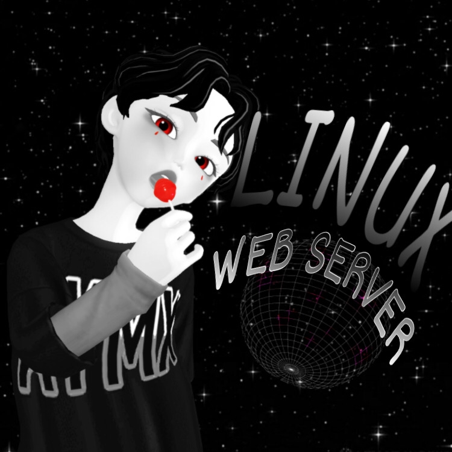
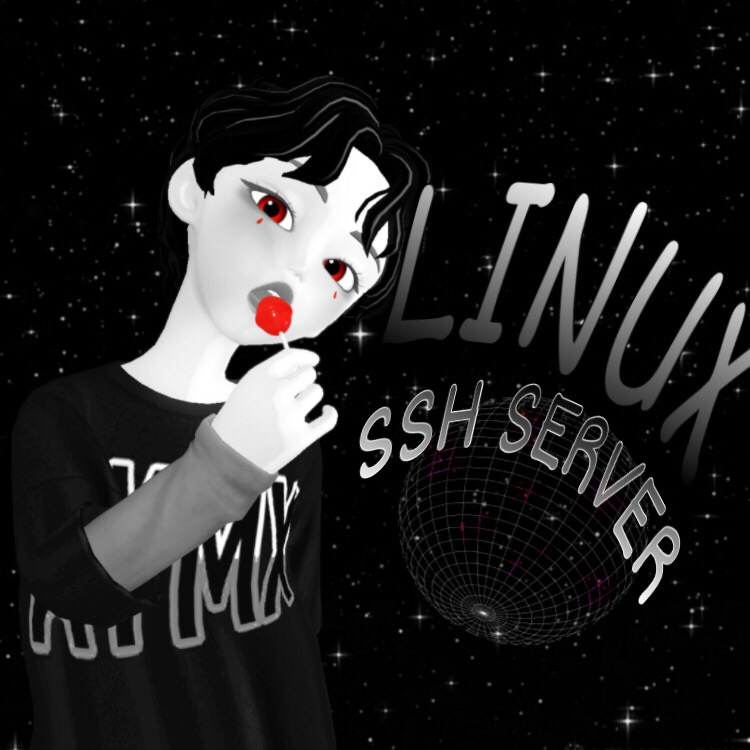

FTP (File Transfer Protocol) adalah protocol yang digunakan untuk mengirim data seperti untuk melakukan upload dan download data oleh FTP client dan FTP server. Pada artikel kali ini kita akan membangun sebuah jaringan FTP menggunakan proftpd diinstal di debian. Konfigurasi yang dibuat kali ini adalah user yang terdaftar saja yang akan dapat mengakses data-data yang sudah dimasukan ke FTP server. Cara proses bekerja ftp hampir sama dengan protocol lainnya.
FTP juga bertugas urusan pertukaran data. Agar client dapat mengakses FTP biasanya menggunakan browser yang terinstal di komputer tersebut atau File Explorer yang ada di Windows, dengan mengetikan url yang sama yaitu ftp:// nama domain atau IP address server.
Konfigurasi FTP Server
Sebelum menginstall ftp di debian server harus terhubung ke internet atau sudah memiliki cd/dvd debian agar saat instalasi proFTPd berhasil. Disini sebagai contoh konfigurasi kali ini menggunakan virtualbox.
1. Buka debian anda dan login, ketik perintah su agar menjadi user root.
2. Setelah itu konfigurasi IP address pada interfaces, ketik perintah dibawah ini dan IP address sesuaikan dengan keinginan anda sendiri contoh pada gambar dibawah:
nano /etc/network/interfaces
Simpan dan restart dengan menjalankan perintah:
/etc/init.d/networking restart
4. Selanjutnya install proFTPd, jika muncul proFTPd configuration pilih standalone, berikut perintahnya:
apt-get install proftpd
5. Setelah instalasi berhasil, selanjutnya buka direktori proftpd untuk melakukan konfigurasi, jalankan perintah dibawah ini:
nano /etc/proftpd/proftpd.conf
6. Setelah itu tambahkan beberapa script di bagian paling bawah, scriptnya ada dibawah ini:
<Anonymous /home/debian>
User debian
</Anonymous>
Penjelasan script diatas:
<Anonymous /home/debian> = Adalah direktori penyimanan data yang nanti akan diakses pada ftp
User debian = adalah nama user yang akan mengakses ftp tersebut
</Anonymous> penutupan dari script
7. Simpan konfigurasi diatas lalu restart proFTPd:
/etc/init.d/proftpd restart
8. Buat folder dalam /home/debian, debian adalah nama username dari debian saya jika anda menggunakan username nama anda sendiri ubahlah script diatas dan sesuaikan. Berikut cara buat folder di direktori
cd /home/debian mkdir DATA MANGLADATECH
Contoh diatas adalah perintah membuat folder dengan nama "DATA MANGLDATECH" anda bebas mengubah, contoh mkdir data anda, lalu cd /home/usernamedebiananda
9. Buat user yang sudah didaftarkan tadi, ketik perintah:
adduser debian
10. Restart proFTPd:
/etc/init.d/proftpd restart
Akses FTP di Client
Langkah terakhir adalah setting client dengan jaringan yang sama seperti di interfaces, lalu buka browser lalu jalankan pada tab url ftp://192.168.100.2 ini adalah contoh ip saya, ganti ip sesuai ip address yang anda konfigurasi. Jika ftp sudah terbuka, ftp akan meminta username dan password masukan user yang sudah didaftarkan pada form tersebut.
Apa Itu Web Server?

Namun sebelum membahas lebih jauh tentang konfigurasi, lebih baik pahami dulu apa itu software transfer data. Web server merupakan software yang menyimpan, memroses, sekaligus mengirimkan file kepada web browser. Perangkat itulah yang memproses permintaan dari user.
Ada beberapa jenis server yang dipakai oleh banyak pengguna. Setiap software mempunyai kelebihan dan kekurangan. Berikut daftar perangkat lunak open-source yang gratis:
Nginx
Apache
LiteSpeed
IIS
Hiawatha
Google Web Server
Cherokee
Konfigurasi Web Server
Selanjutnya adalah cara untuk konfigurasi Apache di Linux Debian 8 dengan memakai virtualbox. Apache harus di-install dulu dengan perintah apt-get-install Apache2. Setelah terpasang, ikuti langkah berikut:
Masuklah ke direktori sites-available dengan memasukkan perintah cd/etc/apache2) sites-available.
Ada dua file yang ditampilkan. Copy file 000-default.conf kemudian ubahlah sesuai nama domain. Caranya dengan menulis perintah cp 000-default.conf namadomain.conf.
Masukkan kode pico namadomain.conf untuk mengedit.
Tekan kombinasi CTRL+W, kemudian ketika ServerName.
Setelah itu ganti dengan www.namadomain.com<.
Pada bagian ServerAdmin, diisi dengan alamat email.
Kemudian DocumentRoot dipilih lokasi penyimpanan, misal /home/web.
Selanjutnya tekan CTRL+X, dan ketik Y.
Tekan tombol Enter.
Tulis pico/etc/apache2/apache2.conf.
Ubah jadi Require all granted dari yang asalnya Require all denied.
Tulis a2dissite 000-default.conf.
Aktifkan namadomain.conf dengan memasukkan perintah a2ensite namadomain.conf.
Muat satu file HTML.
Ubahlah script-nya.
Save dengan nama index.html.
Kemudian ketik service apache2 restart.
Apa Itu SSH Server?

Secara Singkat SSH adalah sebuah protokol administrasi yang memungkinkan user untuk mengakses dan memodifikasi berbagai macam pengaturan maupun file yang ada di dalam server.
Konfigurasi SSH Server
Untuk melakukan Instalasi SSH Server, beberapa tahap harus kita lakukan.
Konfigurasi IP Address
Cek Koneksi
Instalasi SSH Server (openssh-server)
Baik untuk tahap pertama, pastikan teman-teman sudah login sebagai user root pada sistem operasi linux debian yang sudah kita install sebelumnya.
Pada tahap ini, silahkan login sebagai user root
Sebelumnya kita akan mengecek kembali, bahwa adapter 1 / eth0 ter bridge ke internet, karena pada saat ini koneksi internet saya menggunakan WIFI, maka disesuaikan dengan adapter nya, oleh karena itu saya menggunakan Qualcomm ,,,,,
,
Jika sudah, saat nya kita lakukan konfigurasi IP Address pada Linux Debian, tapi sebelum itu kita akan mengecek berapakah IP Address Internet yang kita dapatkan dari ISP.
Disini saya menggunakan Hostpot dari HP, dan gambar dibawah ini adalah ip yang saya dapatkan.
Untuk mengecek IP Address di windows, saya menggunakan CMD, lalu ketik ipconfig /all
Jika sudah, berikutnya kita akan mengkonfigurasi IP Address pada Linux Debian cara nya :
nano /etc/network/interfaces
Lalu ketikan konfigurasi IP Address seperti dibawah ini.
Jika sudah, lakukan restart pada Konfigurasi yang sudah kita buat tadi. dengan cara
/etc/init.d/networking restart atau service networking restart
Berikutnya adalah, mengecek konfigurasi IP Address yang sudah kita buat, dengan mengetikan perintah
ifconfig
Tahap berikutnya adalah, kita akan menginstall SSH atau openssh-server pada Linux Debian kita, Berikut ini adalah cara nya.
1. Jalankan perintah
apt-get install openssh-server
2. Berikutnya kita akan diperintahkan, untuk memasukkan ISO DEBIAN Paket 1 berikut ini cara nya,
devices > optical disk > iso
3. Jika sudah dimasukkan, silahkan klik enter pada layar anda
4. Silahkan tunggu beberapa saat, jika sudah selesai hal yang akan kita lakukan adalah, mengecek status dari SSH Server yang sudah kita install, dengan perintah
/etc/init.d/ssh status
Jika sudah berhasil, maka akan muncul informasi OK, dan ada informasi port yang digunakan
5. Berikutnya adalah, kita akan mengkonfigurasi IP Pada Adapter 2, atau eth1, yaitu pada interfaces Virtual Host Only Adapter.
Seperti biasa, silahkan ikuti pada gambar dibawah ini
6. Silahkan cek konfigurasi IP Address pada Host Only Adapter yang tersedia di Windows yang sudah kita Setting tadi.
7. Silahkan di cek, pastikan kedua Client dan Server sudah bisa terhubung, coba teman-teman cek dengan cara melakukan ping IP Address dari
Client ke Server
dan
Server ke Client
8. Jika sudah, kita akan melakukan SSH Connection, menggunakan aplikasi Putty, teman-teman bisa download di website resmi nya, https://www.putty.org/
Berikutnya kita klik yes saja.
9. Berikut ini adalah tampilan saat teman-teman berhasil melakukan SSH ke Linux Debian
saat pertama kali login, teman-teman harus login sebagai User Biasa / bukan root.
Jika sudah berhasil login, maka teman-teman bisa login sebagai user root, dengan cara ketik su lalu enter (su artinya super user)
Baik, cukup seperti itu untuk menginstall SSH Server pada Linux Debian.
Apa Itu Debian?
Debian adalah sistem operasi yang tersedia secara bebas untuk pengguna. Karena bersifat open source, Anda dapat berpartisipasi dalam pengembangan sistem operasi ini. OS ini menggunakan kernel Linux sebagai dasar dari sistem operasinya.
Sistem operasi adalah pusat eksekusi semua program di komputer atau server. Kernel merupakan jantung dari sistem operasi. Tujuannya adalah untuk mengelola semua aplikasi pada perangkat keras komputer. Dari manajemen memori, proses hingga penyimpanan.
Anda dapat mendownload berbagai aplikasi (software) untuk komputer di Debian secara gratis. Dari aplikasi edit teks, gambar, video, dan video game.
Fitur-fitur yang ada di sistem operasi ini menjadikan salah satu distro teratas yang ada saat ini. Untuk masalah server, sistem operasi ini juga sudah banyak digunakan oleh perusahaan ternama.
Cara Install Debian
1. Untuk membuat mesin virtual baru di VirtualBox, kita klik tombol New.
2. Beri nama pada mesin virtual anda kemudian pilih Next.
3. Untuk ukuran memori (RAM) yang digunakan pada mesin virtual anda, saya sarankan 1024MB namun jika spesifikasi laptop / komputer anda pas-pasan, 512MB juga tidak apa-apa. Selanjutnya pilih Next.
5. Setelah itu pilih VDI (VirtualBox Disk Image).
6. Selanjutnya pilih dynamically allocated kemudian pilih Next.
7. Untuk ukuran harddisk virtual yang digunakan, 10GB sudah lebih dari cukup. Setelah itu pilih Create.
8. Setelah selesai membuat mesin virtual, selanjutnya kita perlu melakukan sedikit pengaturan. Pilih mesin virtual yang telah kita buat tadi (DEBIAN 10) kemudian pilih Settings untuk masuk ke menu pengaturan.
9. Pada menu Settings, kita pilih Storage. Kemudian pada bagian Controller: IDE, pilih Empty kemudian klik ikon CD seperti yang ditunjuk tanda panah. Pilih file ISO Debian 10 yang sebelumnya sudah anda download.
10. Jika file ISO Debian 10 berhasil ditambahkan, tampilannya nanti kurang lebih seperti ini. Selanjutnya pilih OK.
11. Pilih Start untuk memulai proses instalasi.
12. Berikut ini tampilan awal instalasi Debian 10. Pilih Install.
13. Pilih English.
14. Untuk pilihan lokasi dan zona waktu, langsung tekan Enter. Nanti bisa diubah setelah selesai proses instalasi.
15. Pilih American English, kemudian Enter.
16. Ketikkan nama hostname-nya, bebas kok. Kemudian pilih Continue.
17. Masukkan nama domain yang diinginkan, misal nesabamedia.com. Kemudian pilih Continue.
18. Masukkan password untuk root. Gunakan password yang mudah diingat saja. Kemudian pilih Continue.
19. Masukkan kembali password root, lalu pilih Continue.
20. Masukkan nama lengkap untuk pengguna baru anda, misal: zakaria juga tidak apa-apa, tidak harus nama lengkap. Pengguna ini merupakan pengguna biasa, berbeda dengan root yang bisa disebut sebagai administrator yang mempunyai hak dan akses yang lengkap. Jika sudah, pilih Continue.
21. Masukkan username, samakan dengan nama pengguna saja biar tidak bingung. Lalu pilih Continue.
22. Masukkan password untuk pengguna baru. Kalau saya biasanya saya buat sama dengan password root, biar tidak lupa. Selanjutnya pilih Continue.
23. Masukkan kembali passwordnya, kemudian pilih Continue.
24. Pemilihan zona waktu biarkan default dengan menekan Enter, nanti bisa diubah kok.
25. Pada tahap partisi harddisk, pilih Guided – use entire disk.
26. Pilih harddisk yang ingin dipartisi kemudian Enter.
27. Pembagian partisi yang standar dan sering digunakan, minimal terdapat partisi home, var dan tmp. Maka dari itu, pilih Separate /home, /var, and /tmp partitions.
27. Selanjutnya pilih Finish partitioning and write changes to disk.
28. Jika muncul tampilan seperti ini, silakan pilih Yes.
29. Pada langkah ini, pilih No.
30. Pilih No pada langkah ini.
31. Selanjutnya Pilih No lagi.
32. Disini saya ingin menginstall linux berbasis CLI (terminal) karena lebih ringan. Namun jika anda ingin menggunakan yang versi dekstop (GUI) silakan pilih Debian desktop environment dengan cara menekan tombol spasi. Setelah itu pilih Continue.
33. Pilih Yes untuk instalasi GRUP boot loader.
34. Pilih /dev/sda… (nama harddisk anda yang kurang lebih seperti gambar dibawah) kemudian tekan Enter.
35. Proses instalasi Linux Debian 10 sudah berhasil, terakhir pilih Continue.
36. Yey, berikut tampilan Linux Debian anda yang berbasis CLI.
Itulah langkah-langkah cara install Debian 10 di VirtualBox untuk pemula.


 ,
,